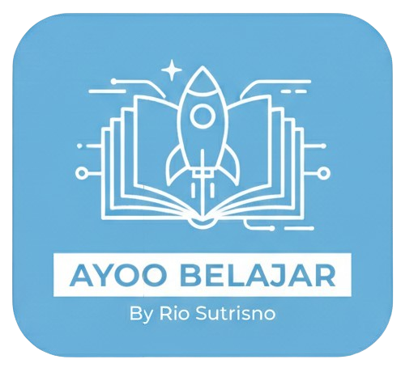

Selamat datang di aplikasi Ayo Belajar, solusi praktis untuk menguasai materi Administrasi Infrastruktur Jaringan (AIJ). Aplikasi ini hadir untuk membantu siswa kelas XI TKJ SMK Swasta Nusa Indah agar dapat belajar secara fleksibel tanpa batasan ruang dan waktu.
Di dalam aplikasi ini, tersedia berbagai fitur unggulan seperti materi pembelajaran yang mudah dipahami, video penjelasan yang interaktif, serta kuis latihan untuk menguji pemahaman. Dikembangkan oleh Rio Sutrisno, aplikasi ini diharapkan dapat menjadi teman belajar setia yang membuat proses memahami jaringan komputer menjadi lebih menyenangkan dan menarik.